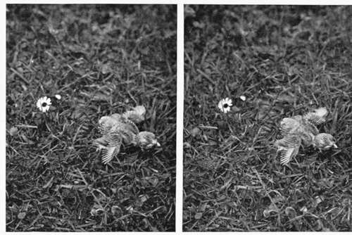
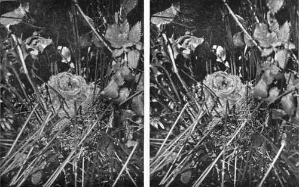
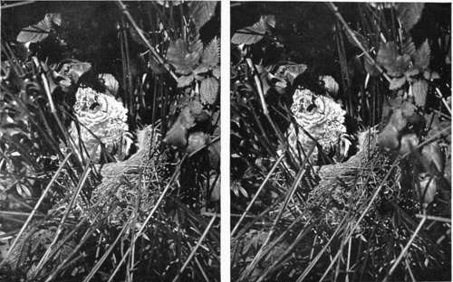
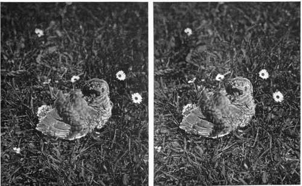

Chapter XIII. The First Three Weeks In The Life Of A Cuckoo
Description
This section is from the book "Nature Photography For Beginners", by E. J. Bedford. Also available from Amazon: Nature Photography for Beginners.
Chapter XIII. The First Three Weeks In The Life Of A Cuckoo
Some years ago, during one of my rambles for the purpose of Nature Photography, a man with whom I was acquainted brought two eggs to me, which he had taken from" a nest not far away, with the request that I would tell him to what bird they belonged. I informed him they were the eggs of a Sedge Warbler, and expressed a wish to see the nest from which they were taken. This was on the eleventh of June. Having described the site of the nest to me, he said he had left four eggs still in it, and I set out to search for it. On discovering it, I was both surprised and pleased to find that one of the four eggs left belonged to a Cuckoo. This egg was, of course, larger than those of the Sedge Warbler, but the colour of it was very similar, and on removing it from the nest for examination the shell began to crack, the egg being just on the point of hatching. I immediately replaced it in the nest and, although the light was failing, managed to obtain a photograph of the nest with its contents, and showing the puncture made in the egg shell by the bill of the young Cuckoo.
Six days after, namely on the seventeenth of June, I again visited the nest and found the young Cuckoo had hatched and was the sole possessor of the nest. The three eggs of the Sedge Warbler had been thrown out, and one was resting on the side of the nest as seen in the photograph. The other two I found in the ditch below, and on breaking one to ascertain how far incubation had progressed, found the young bird had been just ready to hatch when the egg was ejected, but was then dead. The young Cuckoo was six days old and still blind. I photographed it in the nest and have regretted since that at the time it did not occur to me to replace the eggs and witness the act of the young Cuckoo in throwing them out. While engaged in taking the photograph and using the point of my stick to keep back some of the long rushes which were in the way, the hen Sedge Warbler rushed down on one occasion and attacked the end of my stick, uttering harsh notes of rebuke for my interference. I took the young Cuckoo out of the nest and placed it on the grass near, by the side of a common Daisy, for the purpose of providing a scale, and the photograph obtained clearly shows the hollow in the back of the young bird and its strong legs.
My next visit was on the twenty-fourth of June, a week later, when the bird was twelve days old, and its size had increased enormously since my last visit. I again photographed it in the nest and on the grass in the same place as before (see Figs. 72 and 74). When I arrived at the spot on this occasion, I found the Sedge Warbler sitting on the edge of the nest beside the young Cuckoo, and it was most comical to see the foster-parent brooding over, or, perhaps, I ought to say trying to brood over, a young one quite three times her own size. The young bird was at this time very pugnacious and pecked violently at my stick when placed near it. It had also a curious motion, moving up and down in the nest and puffing out its feathers, with the idea, I suppose, of frightening me. I was able to obtain a photograph of it in one of these attitudes in the nest, and other exposures were made on it after it had been taken from the nest and placed on the top of a gate-post near by.
Fig. 71. Young Cuckoo 6 days old.
Fig. 72. Young Cuckoo 14 days old.
Fig. 73. Young: Cuckoo 14 days old.
Fig. 74. Young Cuckoo 14 days old.
On the fourth of July, three weeks after it was hatched, I again visited the site and found only the empty nest. While walking near the river, about a quarter of a mile from the site of the nest, I saw a bird with food in its bill, which I thought it might be carrying to its young somewhere near me. ,On remaining still to watch I was agreeably surprised to see this bird fly into a small copse quite close to me, where I then noticed the young Cuckoo sitting on a branch evidently waiting to be fed. I saw both the foster-parents feed it several times, one of them being the bird I had seen flying across just previously. After the young Cuckoo had been fed it flew into a thicker part of the copse and was lost to view. I was, however, glad to find it had flown safely from the nest without any accident having happened to it, notwithstanding the experiences it had suffered at my hands of having to sit several times for its portrait. Perhaps it may have caught sight of me and, recognising me from previous acquaintance, thought it prudent to beat a hasty retreat.
I will conclude this chapter with a few notes concerning the adult Cuckoo, one of our most interesting birds. The Cuckoo is a summer visitor to Great Britain, Europe, and Asia, migrating southwards in winter as far as South Africa and Australia. It arrives in this country generally about the middle of April, the males preceding the females by a few days. There is a local tradition in Sussex that the bird is taken in a sack to Heathfield (locally pronounced Hefful) Fair and there turned out. This fair is held on the fourteenth of April, and it is curious that in Sussex, at any rate, the bird is heard within a day or two of this date.
Mr. William Borrer, in his Birds of Sussex, says: " Having kept notes of the arrival of the Cuckoo in this county for more than thirty years, I find the earliest to have occurred on the sixth of April, 1844, but about the fourteenth is the more usual date".
Every season records are published of the Cuckoo having been heard in this country in March, or even February and January. In my opinion, if the Cuckoo was heard, it belonged to the genus homo, and to this individual the name is particularly appropriate, as it means a simpleton or fool. The local name of Gowk, also applied to the bird, means the same thing. Both the Sparrow-Hawk and the Kestrel bear a close resemblance to the Cuckoo in flight, size, and length of tail; and there is not much doubt that the early records of supposed Cuckoos are really one or other of these birds which have been mistaken for it. There is an old fable, one of many referring to this bird, that it turned into a Hawk during the winter, and no doubt that is the reason it is even now persecuted by some game-keepers, " who," says Charles Dixon, " knock it over with an oath, and fill its tuneful yellow bill with blood, because it not only looks like a Hawk, but he is 'sartin sure' that it turns into one for the winter!"
Continue to:
- prev: Some Curious Nesting Places. Continued
- Table of Contents
- next: The First Three Weeks In The Life Of A Cuckoo. Continued
Tags
nature, photography, art, birds, camera